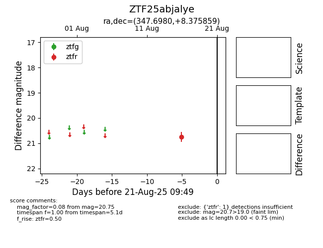

Target ZTF25abjalye at 2025-08-21 09:49, see:
FINK: fink-portal.org/ZTF25abjalye
Lasair: lasair-ztf.lsst.ac.uk/objects/ZTF25abjalye
ALeRCE: alerce.online/object/ZTF25abjalye
alt names
ZTF25abjalye (ztf,alerce)
coordinates:
equatorial (ra, dec) = (347.6980,+8.37586)
galactic (l, b) = (84.9096,-46.93057)
photometry
last ztfr=20.75
1 ztfr detections
